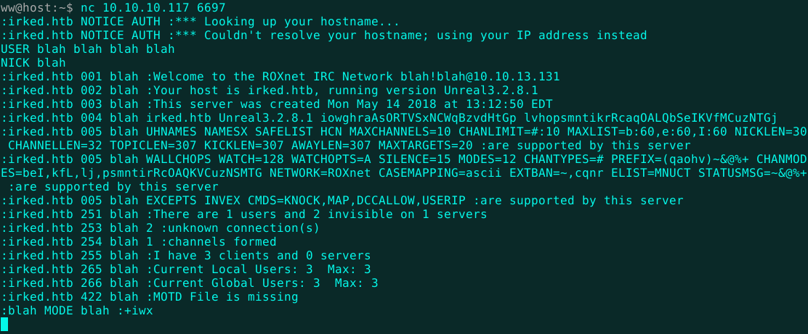

Welcome
Joe Grassl
Freelance codeslinger
>>Irked
After a long hiatus, I'm back to doing write-ups. I used to get challenges from
Vulnhub, but I've since found
Hack the Box. Hack the Box is a glorious stash of CTF boxes and other challenges, including crackmes and steganography puzzles. A box named Irked was just retired, so the flags are no longer worth any points and I can publish this article without giving them away. This was a fun one with a bit of everything.
I always start off with an nmap scan. The IRC and HTTP ports stand out immediately.

The website consists of a hint about the IRC service and a mysterious image. I ran exiftool and strings on it to no avail. Most HTB boxes have a small hint in the name and "Irked" is a bit too similar to "ircd", a Linux IRC daemon. The obvious next step is to check good old Internet Relay Chat.

While I do have irssi, I think I might be able to get away with netcat here. I enter a couple of bogus registration commands and the server coughs up its version number. Throw it into DuckDuckGo and up comes a full Metasploit module. Excellent. So, I set some options...
...execute...
...and there's the shell! A low privileged shell, unfortunately. There are two home directories, but ircd doesn't have anything interesting. Djmardov, however, has all the answers.
There's the user flag, just one privilege escalation exploit away, and a hidden backup file claiming to hold a "steg" password. Steg as in steganography, the practice of hiding secret messages in unobtrusive media like pictures and audio files. Time for another look at that image on the website.
I know that steghide is a common tool for hiding and extracting data using images. I give it a shot with the above password and get a whole new password back.
I drop into a Bash shell with Python in order to run su. Using the password works just fine and I'm able to grab the flag.
Privilege escalation to root is next on the list. One of the first enumeration commands I run is "find / -perm /u=s,g=s 2>/dev/null". This lists all files with suid or sgid privileges (they run as the user who created the file, not the one currently executing it). There's something strange in the output.
Viewuser is definitely not a standard file. Now we have something to dig into.

Strings hits the jackpot on this one. There's a message about it being a custom application (a very good sign on CTF boxes like this) and a line referencing a file at /tmp/listusers.
The file is owned by ircd, apparently. Not exactly sure if another Hack the Box user modified it or if I could have actually skipped straight from ircd to root.
I switch back to ircd and find out the file is empty. We can fix that. I'm assuming viewuser will just execute the file in some way, so I throw in a netcat shell and hope for the best.
Making /tmp/listusers executable just in case and running viewuser confirms the vulnerability. You can see the code for the reverse shell begin to execute on the last line of output.
Back on my local machine, a root shell has already arrived. I snag the root flag, bringing this pleasant digital journey to its end.